hydrotherapy
1st lecture
topics
- hydrotherapy defination
- chemical properties of water:
- polarity and structure
- dissolving ability
- physical and mechanical properties of water:
- specific heat
- thermal conductivity
- Density of water (specific gravity)
- hydrostatic pressure
- buoyancy
- cohesion and viscosity
- turbulence
- Precautions for Hydrotherapy
- Advantages and Disadvantages of hydrotherapy
Hydrotherapy Defination:
is a greek words where:
hydro= water
therapy= treatment "healing"
So, hydrotherapy is a therapeutic modality (method) that uses water in:
- any form:
- gas (steam)
- liquid (water)
- solid (ice)
- any temperature:
for the treatment of physical or psychological dysfunction.
chemical properties of water:
polarity and structure:
pure water is polar molecule consisting of 2H atoms and one O atom.
the difference in electronegravity between the oxygen atom and hydrogen atoms causes the oxyhen to have a partial negative charge and hydrogen to have a partial positive charge.
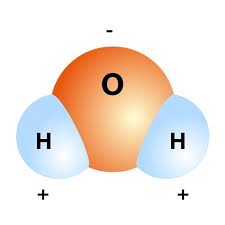
the partial positive charge of hydrogen of one water molecule attracts the partial negative charge of the oxygen of another water molecole
This attraction is called Hydrogen bonding.
universal solvent
water posses high dissolving power.
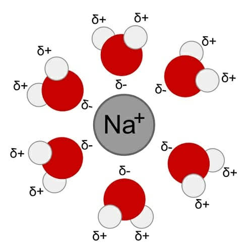
this power helps in cases of addative material to water for the rapeutic causes as in wound care.
substances can dissolve in water if they can match or overcome the hydrogen bonding between water molecules hydrophilic sunstances are that can dissolve in water like : alchols, acids, salts.
while hydrophobic substances are substances that can't dissolve in water like: fats and oils.
water is amphoteric as it can act as either an acid or a base depending on the solution as it can produce both H+ and OH- ions
Physical and mechanical properties:
Specific Heat:
specific heat: is the capicity of a substance to store heat.
water has high specific heat of 4184J/kg at 20°C.
So, it can store 4X more heat than air.
and water can store 2X as much as a paraffin wax.
Approximately.
Thermal Conductivity:
The capicity of a substance to conduct heat to other substances or materials.
The thermal conductivity of solids >100 that of liquds which is >100 more than that of gases.
Aprroximatly.
This explains why, moist hot towels provide more edfective treatment than dry.
Density of water (specific gravity):
Density= mass/volume
Density of water= 1gm/cm3at 3.98°C ≈4°C
Density of ice is less than that of liqud water ,while Density of vapour is less than that of ice and water.
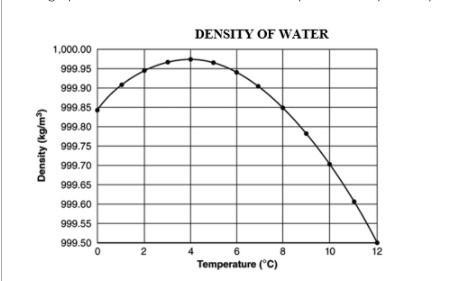
if an object has specific gravity <= that of water it floats.
But,if it has more density than water it sinks.
the human body can float on water's surface as its density = 0.974gm/cm3 .
we can decrease density of object by 2 ways:
- adding air-filled objects at rest.
- expanding the object to take more volume (increasing the volume of the object without increasing its mass)
Buoyancy
buoyancy is the force experienced as an upward thrust on the body in the opposite direction to force gravity.
Archimedes' principle:
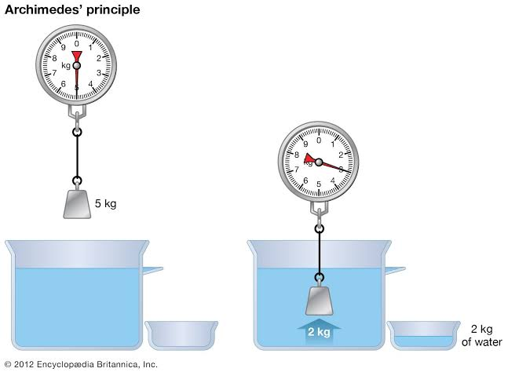
states that when a body is entirely or partially impressed in fluid at rest ,it experiences an upward thrust equal to the weight of the fluid displaces.
clinical application on buoyancy
weight relief:
depends on the proportion of the body below water level.
weight relief is approximately:
- 50% when the water is at the waist level.
- 90% when the water is at the shoulder level.
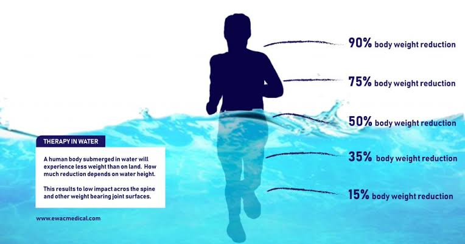
this allows patients to perform exercise with less trauma and pain on joints as it decreases stress and compression on weight-bearing joints, muscles, and connective tissue
The upward thrust of water can be used either to assist movement (moving upward with upward thrust) or resist movement (moving downward against the upward thrust) to increase muscle strength..
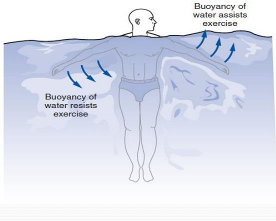
Hydrostatic pressure
Hydrostatic pressure is the pressure exerted on an immersed body by the water that surrounds it.
According to Pascal's law:
a fluid exerts equal pressure on all surfaces of a body at rest, and this pressure is directly propotional to the depth of the fluid.
Hydrostatic pressure is directly propotional to the:
- density of the fluid
- depth of the fluid
Therefore, motion is performed more easily near the surface of the water than at greater depths.
cohesion and viscosity
cohesion is the tendency of molecules to attract each other.
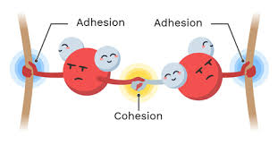
viscosity is the internal friction that occurs between molecules of water.
viscosity of water makescit a useful strengthening medium.
When a body moves through water , there is a resistance to its motion which is directly propotional to the speed of the object.
Turbulence
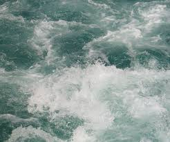
turbulence: is an irregular movement of water molecules.
it may created by:
- under water douche
- turbines
water at rest transfers heat by conduction ,While movig water transfers heat by conduction and convection.
moving water have a relaxing effect and maybe used to decrease:
note: impression (diving):
acts to drive out edema, lactate, and other metabolic end products.
Precauations for Hydrotherapy:
we can't use hydrotherapy with:
- Hypersensitivity to chemicals used in pool.
- multiple sclerosis we can't use water warmer than 88°C.

- Thermoregulatory
- Epilepsy
الصرع
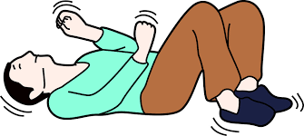
- Excessive fear of water
- Peripheral vascular disease

- fever
- Dysphagia
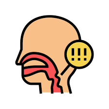
- Comromised Respiratory function
- Unstable high or law blood pressure
- Severaly weakend or deconditioned state
note: never force a patient with a fear of water to engage in hydrotherapy.
Advantages and Disadvantages of Hydrotherapy
Advantages
| free movement with less risk of injury. |
decreases weight bearing on joints |
buoyancy may assist weak muscles to allow increased performance of active exercise. |
Has the ability to affect all major body systems. |
Disadvantages
|
slippery environment with increased risk of falls outside pool.
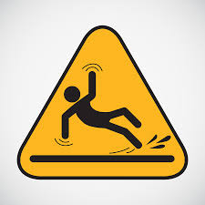
|
risk of infection.
|
difficulty stabilizing or isolating body parts during exercise. |
risk of drowning
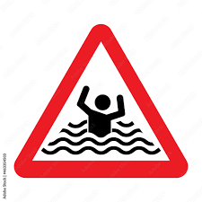
|